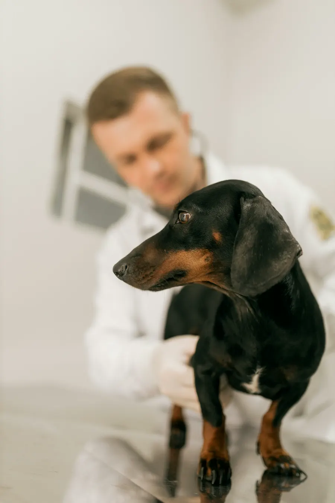
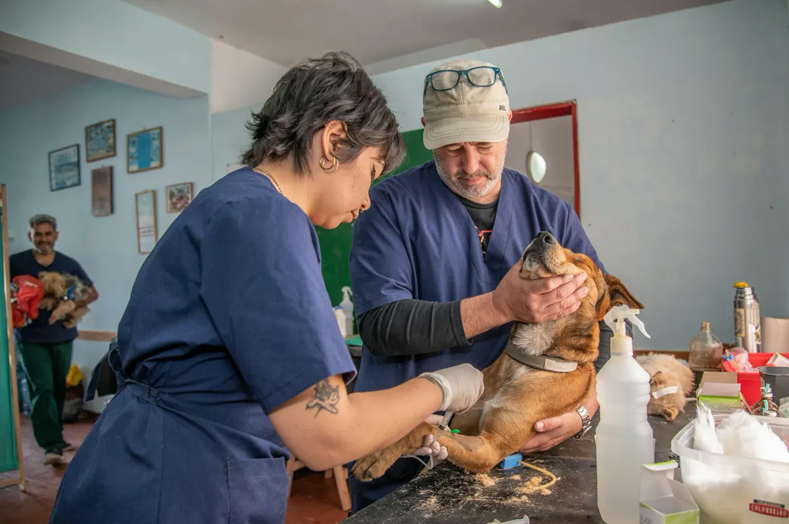

ทำได้ทันทีตอนกลางคืน
- ตรวจเลือดรู้ผลใน 20 นาที ไม่ต้องส่งแล็บนอก
- X-ray · อัลตราซาวด์เครื่องเปิดตลอดคืน
- ผ่าตัดฉุกเฉินห้องพร้อม ไม่ต้องเรียกหมอจากบ้าน
- ให้ออกซิเจน · ให้น้ำเกลือวอร์ดมีคนเดินเช็กทุกชั่วโมง
คลินิกเฉพาะทาง 12 สายอยู่ในตึกเดียวกัน — และเราบอกตรงๆ ว่าอะไรทำได้ตอนตี 2 อะไรต้องรอเช้า
ทั้งหมดอยู่ในตึกเดียวกัน — ไม่ต้องนัดส่งต่อกรุงเทพฯ ทุกเคส
สิ่งที่เราทำได้จริงตอนตี 2 ไม่ใช่แค่ "รับเคสไว้ก่อนแล้วรอหมอเช้า"


เราไม่รับปากว่าทำได้ทุกอย่างตอนตี 2 — บอกไว้ตรงนี้ดีกว่าให้คุณขับรถมาแล้วเพิ่งรู้